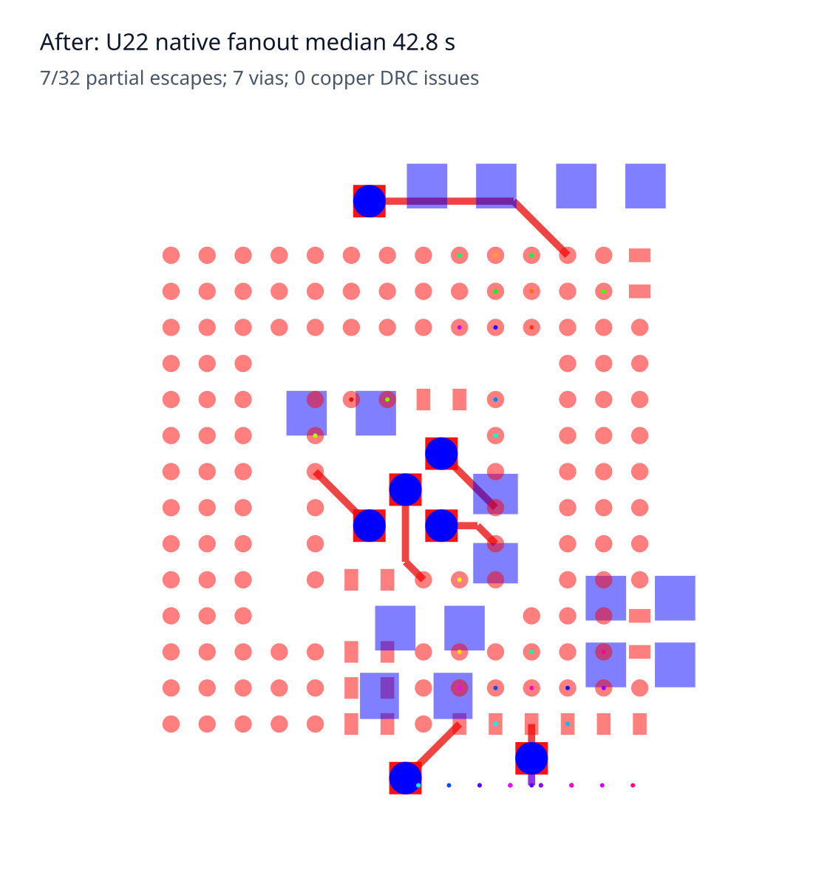
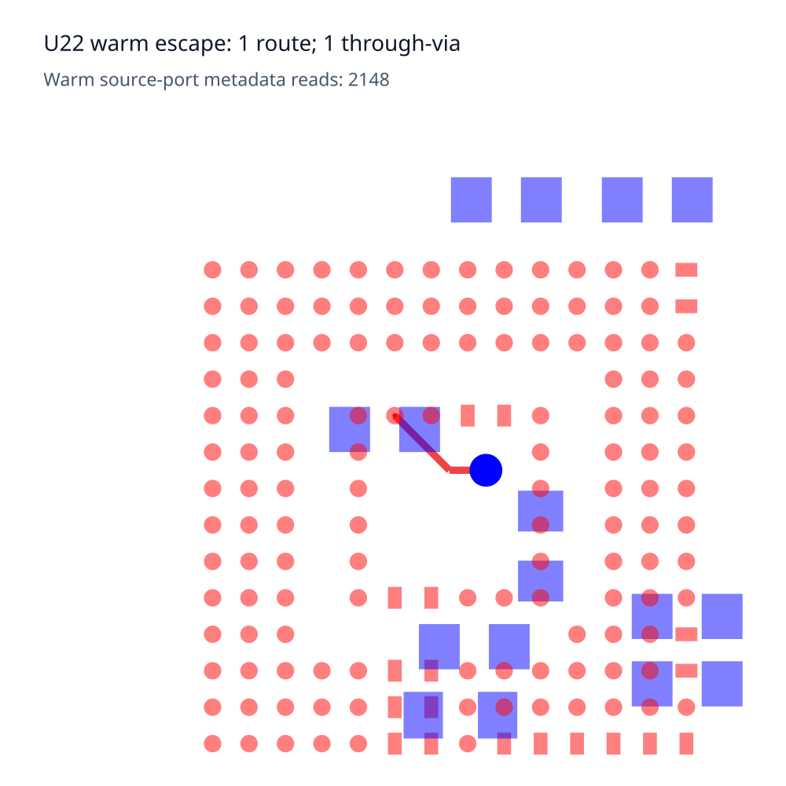
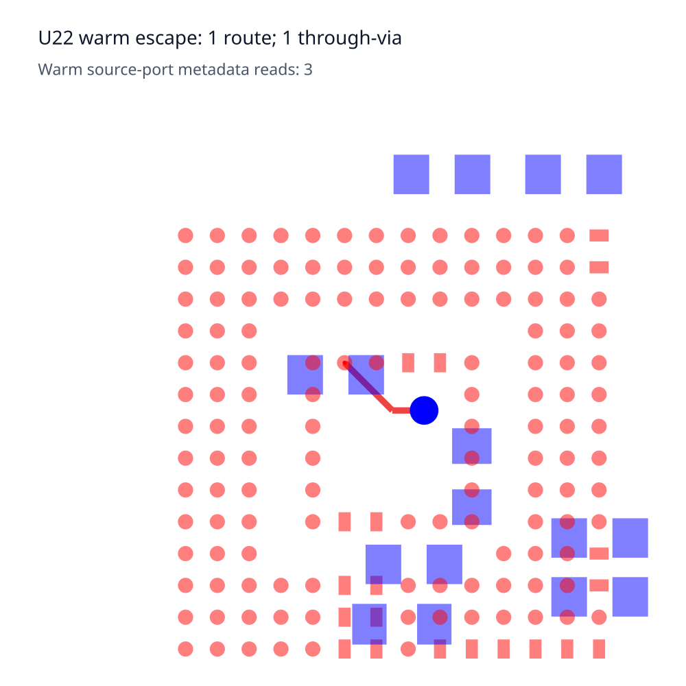

tscircuit 0.0.3243 / core 0.0.2425 / fanout 0.0.89. All six boards still fail fanout; no accepted copper or DDR bus routing. The fix reduces repeated candidate construction.
Analysis and raw statistics · Full before/after PCB SVG · TSX sources, SVGs and raw results
| Native search | Before median | After median | Reduction |
|---|---|---|---|
| iCE/Pi CM0 SBC | 101.0s | 42.8s | 57.7% |
| i.MX6 Demo Board | 122.4s | 39.2s | 68.0% |
 |
 |  |